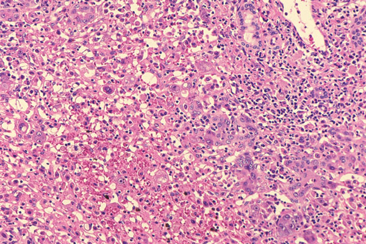

演題発表に関連し,発表者らに開示すべきCOI関係にある企業などはありません。
主訴 全身倦怠感,発熱
現病歴
入院4日前より全身倦怠感を自覚し,38.4℃の発熱を認めた。
安静臥床にて様子を見ていたが,以降も発熱持続し,入院前日には40℃まで上昇したため,翌日に当科紹介受診。
採血にて肝胆道系酵素が著明であり,精査加療目的に同日当科入院となった。(第1病日)
既往歴 特記事項なし
アレルギー
drug: ペニシリンでアナフィラキシーショック(幼少期)
food: (-), 喘息(-)
家族歴
B・C型肝炎の家族歴なし,その他事項なし
内服歴 なし
生活歴
飲酒： ワインボトル1/2本+ウイスキー水割り1-2杯/日
喫煙： なし
摂取歴： 直近で生魚,猪,鹿,豚肉等の摂取なし
性交歴： 不特定多数との性交なし
輸血歴：なし 海外渡航歴：なし
全身 JCS-0, 身長 185 cm, 体重 71.90 kg, BMI 21.0 kg/㎡
Vital BT 39.1 ℃, PR 92 bpm, BP 110/80 mmHg, SpO2 96 %
頭頸部 眼瞼結膜貧血なし, 眼球結膜黄染なし, 頸部・鎖骨上・腋窩リンパ節腫脹あり, 咽頭発赤なし,口腔内白苔なし
胸部 肺野・心音異常なし
腹部 平坦/軟, 圧痛なし, 腸蠕動音正常, 脾臓は触知せず
四肢 下腿浮腫なし, 末梢冷感なし,足背動脈触知可
| 血算 | ||
| WBC | 3800 | /μl |
| Hb | 15 | g /dl |
| Hct | 43.7 | % |
| Plt | 92 | 万/μl |
| 凝固 | ||
| PT | 65.5 | % |
| D-Dimer | 2.5 | μg/ml |
| 生化学 | ||
| Na | 132.9 | mEq/l |
| K | 4.2 | mEq/ |
| Cl | 95.6 | mEq/ |
| ALP | 741 | IU/l |
| AST | 718 | IU/l |
| ALT | 422 | IU/l |
| T.Bill | 0.7 | mg/dl |
| D.Bil | 0.3 | mg/dl |
| γ-GTP | 354 | IU/l |
| LDH | 652 | IU/l |
| Alb | 3.9 | g/dl |
| BUN | 15.8 | mg/dl |
| Cre | 1.04 | mg/dl |
| UA | 4.1 | mg/dl |
| 免疫 | ||
| CRP | 6.43 | mg/dl |
| IgA | 97 | mg/dl |
| IgG | 1214 | mg/dl |
| ET | <0.8 | |
| PCT | 0.56 | ng/ml |
| AMA | 2.1 | |
| ANA | (-) | |
| sIL-2R | 1490 | |
| CA19-9 | 11.6 | U/ml |
| CEA | 0.6 | ng/ml |
第1病日 腹部単純CT
肝生検
形質細胞浸潤<<リンパ球浸潤
ウイルス血清検査
| CMV-IgG | 80 | |
| CMV-IgM | < 4 | |
| EBV-IgG | < 10 | |
| EBV-IgM | < 10 | |
| EBV-EBNA | 20 | |
| HBsAb | 0.2 | mIU/ml |
| HBeAb | 33 | % |
| HBeAg | 0.1 | COI |
| IgMHBcAb | 0.2 | COI |
| HBcAb | 0.2 | COI |
| HBVDNA | (ー） | |
| IgMHA | 2.34 | |
| HCVAbEIA | 0.1 | COI |
| IgAHEVAb | (ー) |
AST,ALT, ALP,LDHなどが上昇
異型リンパ球 < 20%
以下のいずれかを満たせばHPS/HLHと診断される。
A項目
B項目
C項目